Other features
File icons#
In the Project tool window, editor tabs, navigation bar and various other places, the icons for the following files are replaced with the tools' logos:
- Ruff:
ruff.toml/.ruff.toml - uv:
uv.toml,uv.lock - Rye:
.rye/config.toml
Additionally, py.typed, .python-version and pylock.toml's icons
are replaced with Python logos.
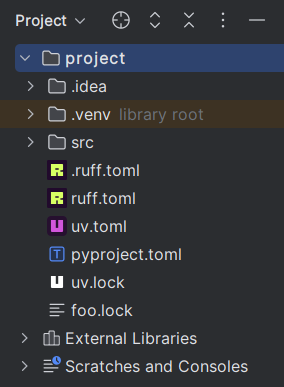
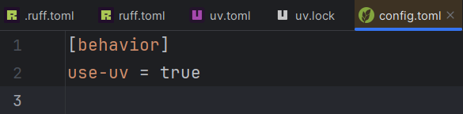
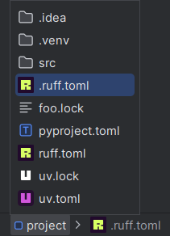
New terminal autocompletion#
If the new terminal is used,
autocompletion will be provided for ruff, uv, uvx and rye commands.
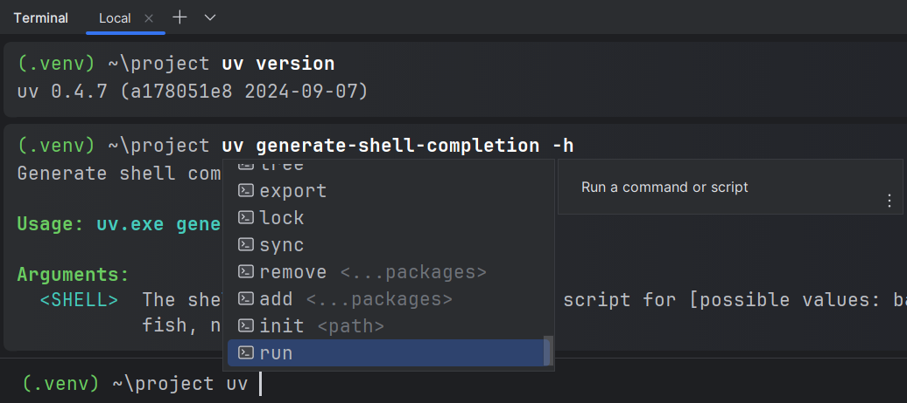
Language injection#
Inline script metadata block#
PEP 723 inline script metadata blocks
are automatically injected with TOML.
Only Python files whose extensions are
either .py or unknown are supported.
This can be disabled using the corresponding setting. To force rerendering, make an arbitrary edit or reopen the file.
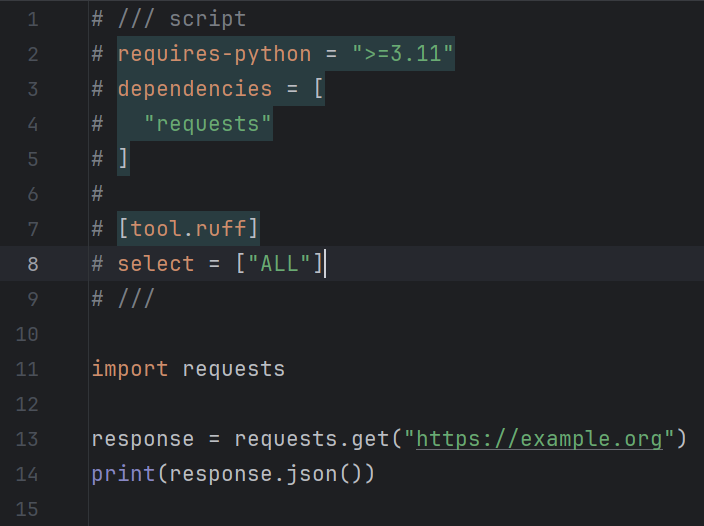
Requirements arrays in TOML files#
uv settings that takes an array of PEP 508 dependencies
are injected with Requirements,
similar to that of project.dependencies.
Such settings include:
- [
tool.uv]constraint-dependencies - [
tool.uv]dev-dependencies - [
tool.uv]override-dependencies - [
tool.uv]upgrade-package - [
tool.uv]pip.upgrade-package
project.optional-dependencies and dependency-groups are also supported.
This monkeypatches PY-71120.
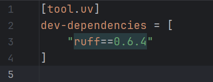
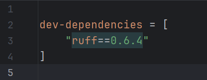
Edit script metadata fragment#
This intention is available when the cursor is inside the script metadata block.
It opens a new editor with the fragment content prefilled, removing all prefixes and suffixes. The new content will be written back when this editor is closed.

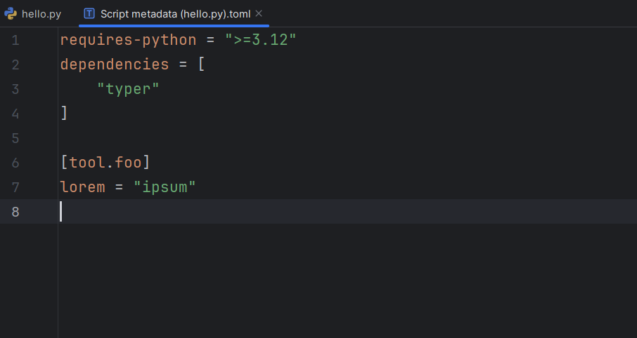
Installed version inlay hints#
In pyproject.toml and uv.toml files,
elements of dependency specifier arrays
will have inlay hints displayed next to them,
showing the currently installed versions.
This applies to the following arrays (configurable using Settings | Inlay Hints | Other | TOML | Dependency versions):
project.dependencies(default: enabled)project.optional-dependencies.*(default: enabled)build-system.requires(default: disabled)dependency-groups.*(default: enabled)- [
tool]uv.constraint-dependencies(default: disabled) - [
tool]uv.dev-dependencies(default: enabled) - [
tool]uv.override-dependencies(default: disabled) - [
tool]uv.upgrade-package(default: disabled) - [
tool]uv.pip.upgrade-dependencies(default: disabled)
This is equivalent to running uv pip list at the project's path
with the corresponding interpreter as argument, if any.
Limitations#
On IntelliJ IDEA, flickering might happen during recalculation. The cause of this problem is as of yet unknown.
As a workaround, enable the "Retrieve data for computing dependency version inlay hints in read action" advanced setting in the uv subpanel.
This workaround has the disadvantage of delaying other inlay hint providers, causing a "synchronous execution under read action" exception to be logged. Unless the delay proves to be a problem, you can safely ignore this warning.
Dependency groups#
PEP 735 dependency groups are supported using a number of features.
Language injection#
See § Requirements arrays in TOML files.
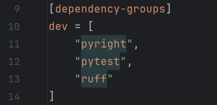
References finding#
On focus, an included group's name will be highlighted along with that group's declaration and vice versa.
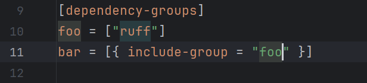
One-click-install via line markers#
Dependency groups can be installed
using their corresponding icons in the gutter.
The icon next to the [dependency-groups]
table header installs all groups.
This is equivalent to running uv sync --group .../uv sync --all-groups
at the project's path.
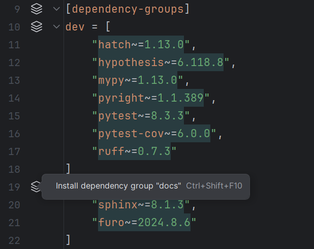
Inspection#
Errors will be reported for a dependency group if:
- It includes an invalid group.
- It includes itself.
- It has the same normalized name as another group.
Command logs#
Tool commands run by RyeCharm and their outputs are logged by the RyeCharm logs tool window. This might be helpful for debugging purposes.
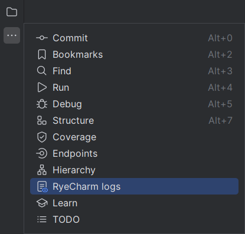
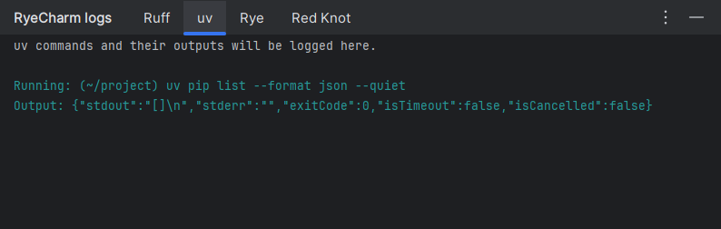